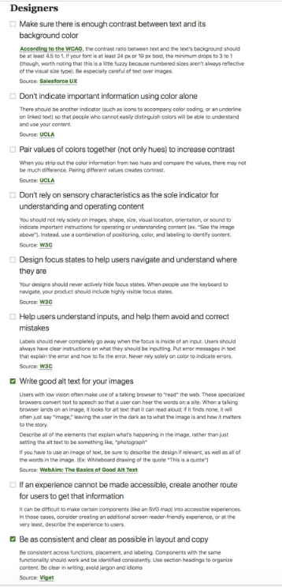

Kangning Chen Final Project
Checklist

Recommendations
- Color contrast on this page is mostly decent. However, the “HOME” and ”ALUMNUS” tabs, as well as linked texts “MAGAZINE ARCHIVE” and ”NOTABLE ALUMNI,” do not exhibit enough contrast. Choosing a different color may help. However, if the designer insists on using this particular color, I would recommend choosing a different hue (lighter text on dark background or darker text on light background) to meet the 4.5 to 1 minimum contrast ratio.
- This page fails to indicate important information in a clear manner. Though made bold, linked text “meet the criteria” is not underlined or easily distinguishable, and may hinder a vision-impaired user’s ability to understand and use the content. I would recommend not removing underline of linked text simply for aesthetic purposes, as using color as the sole indicator for important information is not sufficient.
- Most importantly, although the page enables a keyboard user to skip to content, the majority of the page’s content, which is contained in a group of JavaScript-enabled dropdowns, is not accessible through tabbing. And the page does not create another route for users to obtain information contained in these dropdowns. Through research, I discovered that one solution (among a few more) is to add ARIA markup using JavaScript, which enables a keyboard user to tab through dropdowns. ARIA would keep passing updated information to assistive technology, which in turn communicates with the user, as s/he interacts with a dropdown.
- Focus states are mostly good on this page. However, when tabbed, the search button (magnifier icon in the upper-right corner) would not be in focus and the search bar would not jump out. Removing dynamically generated search bar and simply putting the search bar in the navigation may help.
*"Help users understand inputs, and help them avoid and correct mistakes" does not apply on this page.
*Reference: http://terrillthompson.com/blog/202